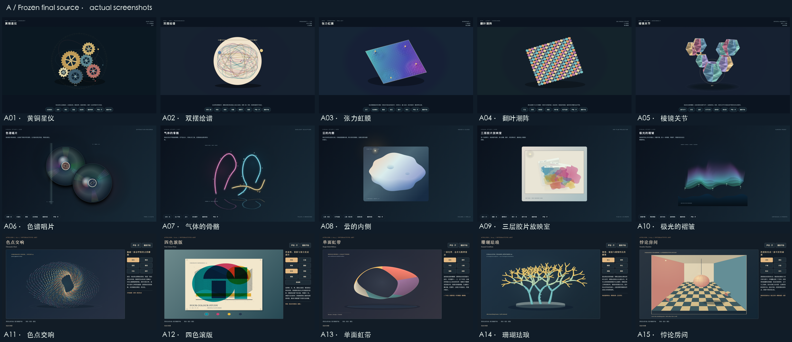
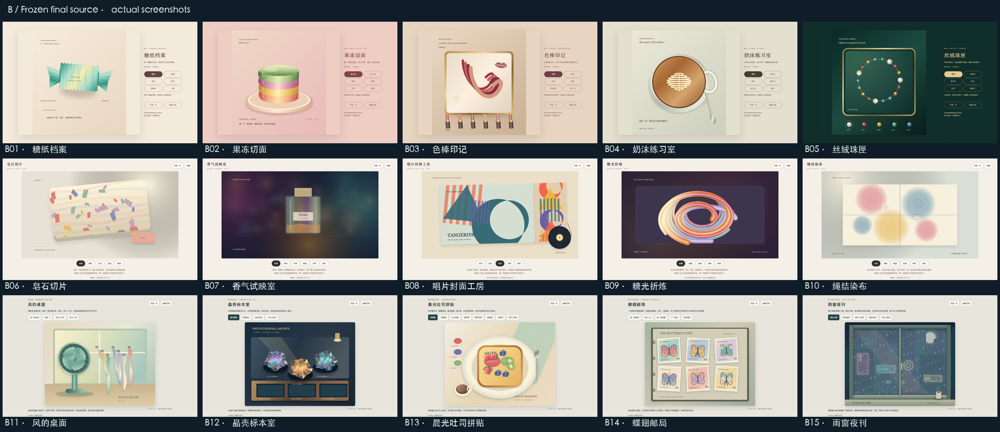
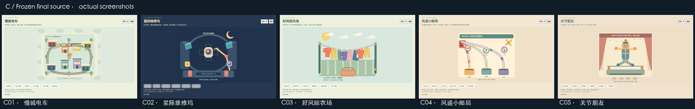

35件，已经可以玩。
15件 p5视觉艺术 + 15件材料动态艺术 + 5件扁平互动
每件有独立页面和完整离线ZIP，有原创程序音乐与操作音效。A组实际使用本地p5.js1.11.11，附原库许可；B、C为独立Canvas2D。各件按主机制、美术主体、材料与运动表达区分，历史批次保留。
作品总目录 · 35件总ZIP · A15 ZIP · B15 ZIP · C5 ZIP
35件逐件两视口至少60秒持续真实输入，音乐和操作音效分别实测非零波形；静音输出零，重置保持静音，真实失焦/导航停声。35个正式ZIP全部实际提取断网运行，586个文件SHA一致。3个分类包和总包的离线目录真实点击均可进入作品。35个公开页面与独立ZIP下载已真实检查；三个分类ZIP和总ZIP都实际点击下载并确认字节相同。旧主站、batch03、batch04公开页面保持原SHA。
测试边界：手机为390×844浏览器触控仿真，桌面1440×900；没有实体手机或人工听音。音频使用主增益后的时域分析仪RMS，独立音效测试暂时关闭音序调度仅用于诊断。参考页面只用于机制和审美研究，未复制第三方美术、角色、字体或录音，未擅自为原创内容附公开许可证或承诺独占AI版权。
完整原始验证记录 · 源码与ZIP SHA256 · 差异矩阵JSON
逐件页面与ZIP
| 编号 | 作品 | 公开页面 | 一键下载 |
|---|---|---|---|
| A01 | 黄铜星仪 | GitHub Pages | 独立ZIP |
| A02 | 双摆绘谱 | GitHub Pages | 独立ZIP |
| A03 | 张力虹膜 | GitHub Pages | 独立ZIP |
| A04 | 翻叶潮阵 | GitHub Pages | 独立ZIP |
| A05 | 棱镜关节 | GitHub Pages | 独立ZIP |
| A06 | 色谱唱片 | GitHub Pages | 独立ZIP |
| A07 | 气体的骨骼 | GitHub Pages | 独立ZIP |
| A08 | 云的内侧 | GitHub Pages | 独立ZIP |
| A09 | 三层胶片放映室 | GitHub Pages | 独立ZIP |
| A10 | 极光的褶皱 | GitHub Pages | 独立ZIP |
| A11 | 色点交响 | GitHub Pages | 独立ZIP |
| A12 | 四色滚版 | GitHub Pages | 独立ZIP |
| A13 | 单面虹带 | GitHub Pages | 独立ZIP |
| A14 | 珊瑚珐琅 | GitHub Pages | 独立ZIP |
| A15 | 悖论房间 | GitHub Pages | 独立ZIP |
| B01 | 糖纸档案 | GitHub Pages | 独立ZIP |
| B02 | 果冻切面 | GitHub Pages | 独立ZIP |
| B03 | 色棒印记 | GitHub Pages | 独立ZIP |
| B04 | 奶沫练习室 | GitHub Pages | 独立ZIP |
| B05 | 丝绒珠匣 | GitHub Pages | 独立ZIP |
| B06 | 皂石切片 | GitHub Pages | 独立ZIP |
| B07 | 香气试映室 | GitHub Pages | 独立ZIP |
| B08 | 唱片封面工房 | GitHub Pages | 独立ZIP |
| B09 | 糖光折炼 | GitHub Pages | 独立ZIP |
| B10 | 绳结染布 | GitHub Pages | 独立ZIP |
| B11 | 风的桌面 | GitHub Pages | 独立ZIP |
| B12 | 晶壳标本室 | GitHub Pages | 独立ZIP |
| B13 | 晨光吐司拼贴 | GitHub Pages | 独立ZIP |
| B14 | 蝶翅邮局 | GitHub Pages | 独立ZIP |
| B15 | 雨窗夜刊 | GitHub Pages | 独立ZIP |
| C01 | 慢城电车 | GitHub Pages | 独立ZIP |
| C02 | 星际维修坞 | GitHub Pages | 独立ZIP |
| C03 | 好风晾衣场 | GitHub Pages | 独立ZIP |
| C04 | 风递小邮局 | GitHub Pages | 独立ZIP |
| C05 | 关节朋友 | GitHub Pages | 独立ZIP |
A组实际截图

B组实际截图

C组实际截图

参考、视觉与机制差异
| 作品 | 视觉主体 | 主机制 | 与历史/其他作品区别 | 参考 |
|---|---|---|---|---|
| A01 黄铜星仪 | 黄铜与氧化铜的动力雕塑 | 啮合树传动、逆转、离合、抓取齿轮重组 | 主体是传动关系；不沿用旧磁石舞/重力音符的吸力或降落 | 参考网页 1 参考网页 2 |
| A02 双摆绘谱 | 暖纸与深多色摆迹 | 拖摆锤、锁第二摆、耦合比、转纸、留页 | 由双摆动力学留下运动轨迹；不复用字螺文字和织光线笔触 | 参考网页 1 |
| A03 张力虹膜 | 虹彩弹性膜与浮起固定钉 | 拉钉、敲击波、驻波模态叠加 | 真正弹性波面；区别旧折纸山谷的折痕和声波水庭液面 | 参考网页 1 |
| A04 翻叶潮阵 | 双色实体翻叶阵列 | 刷动180°翻面、固定叶片、连锁与错相传播 | 可翻的片面与局部锁定；区别纱间网线叠层摩尔纹 | 参考网页 1 |
| A05 棱镜关节 | 大型切割晶体与黄铜接头 | 关节展开、逐模块接装、全构架旋转 | 实体3D模块装配；区别玻璃果园的散置玻璃物、B12矿壳刷尘 | 参考网页 1 |
| A06 色谱唱片 | 黑金属双盘与色谱刻槽 | 双盘相位、按压刻槽、扫描条、锁相 | 主角是衍射光学相位；B08以大封套编辑为主且移除scratch | 参考网页 1 |
| A07 气体的骨骼 | 粉青玻璃辉光管雕塑 | 弯管、充气、点火、分支、封闭循环 | 粗玻璃内发光充气；不做星网细丝切断修补种植 | 参考网页 1 |
| A08 云的内侧 | 奶油蓝层云体积标本 | 雕孔、移动剖面、太阳散射、压缩 | 有限云体雕刻剖面；区别旧天鹅绒星云的粒子背景 | 参考网页 1 |
| A09 三层胶片放映室 | 暖白投影板上的三片透明胶片 | 选片、整层移动和镜像、滴墨、移灯 | 实体透明层决定叠色投影；区别蓝晒曝光水洗与流体混色 | 参考网页 1 |
| A10 极光的褶皱 | 紫绿极光帘与高空辉光 | 拖基点、折叠展开、锋面与高度 | 整体帘曲面形变；区别欧泊织机与纱网的交织线 | 参考网页 1 |
| A11 色点交响 | 彩点三维抽象雕塑 | 按压挤出、聚团、展层、重编点群 | 固定点云分层形态；无捏脸/人物资产 | 参考网页 1 |
| A12 四色滚版 | 四色独立印版与套封纸 | 拖套准、滚压显影、擦版留白、换版 | CMYK独立套准；区别旧地形等高线刻版/菌纹生长印花 | 参考网页 1 参考网页 2 |
| A13 单面虹带 | 柔光莫比乌斯宽实体色带 | 扭数、宽度、切中缝、分带、铺展 | 拓扑半扭曲面；不复用织线/纱网，区别糖带的碎裂熔炼 | 参考网页 1 |
| A14 珊瑚珐琅 | 曲枝锥度珊瑚与珐琅亮面 | 剪子枝、嫁接、钙化、转台 | 三维枝骨编辑与材质发展；区别旧花园/风中花圃的种花导风 | 参考网页 1 参考网页 2 |
| A15 悖论房间 | 暖色透视房与棋盘地 | 拖消失点、开合墙、折空间、吊体投影 | 可变多空间透视；不复用昼夜小屋的居家昼夜场景 | 参考网页 1 |
| B01 糖纸档案 | 金属透明糖纸的编辑档案 | 拆封、压褶、扭封、压印、收藏 | 包装材料的机械褶皱；不同于旧折纸剧场/山谷 | 参考网页 1 |
| B02 果冻切面 | 暖光盘内多层凝胶甜品 | 叠层、戳弹、倾盘、切面分离、装饰 | 固体弹性层与剖面；不复用流彩池/颜料潮汐流动 | 参考网页 1 |
| B03 色棒印记 | 黄铜镜台与色棒厚痕 | 描画、唇印、金箔纹、擦拭、成册 | 厚印痕编辑；没有捏脸角色，没有菌纹自动生长 | 参考网页 1 参考网页 2 |
| B04 奶沫练习室 | 陶瓷杯与连续奶沫曲线 | 浇奶、针拖花、旋杯、撒粉、双杯陈列 | 受杯容器约束的泡沫拉花；不同于无边颜料潮汐 | 参考网页 1 |
| B05 丝绒珠匣 | 暗绿丝绒上的珠饰 | 落珠、拖排、穿环、扣合、展陈灯 | 离散实物首饰构件闭合；不同于欧泊织机的连续纤维 | 参考网页 1 |
| B06 皂石切片 | 乳白矿层皂与嵌彩皂片 | 切层、镶料、压花、泡沫擦洗 | 切片揭露块体内部；区别色釉窑表面上釉 | 参考网页 1 |
| B07 香气试映室 | 冷暖玻璃香瓶与彩香雾 | 三香混喷、旋瓶遮光、纸签采样、清风 | 局部香域随时间混合与采样；不复用旧星云粒子画笔 | 参考网页 1 |
| B08 唱片封面工房 | 抽象印刷大封套与角落黑胶 | 拖版、贴印、折页、翻版、声轨编排 | 封套编辑是主体，黑胶仅声源；与A06径向光学刻槽明确不同 | 参考网页 1 |
| B09 糖光折炼 | 多色渐变盘绕糖雕 | 局部拉糖、结糖、敲碎、热熔重组 | 熔炼仍保留多条糖雕；不同于A13的拓扑宽带 | 参考网页 1 |
| B10 绳结染布 | 分区染布与束结留白 | 结点束缚、分区染色、展开、再折重染 | 束结控制渗染留白；区别纱间摩尔纹、菌纹印花、蓝晒曝光 | 参考网页 1 |
| B11 风的桌面 | 薄荷风扇与丝绸长带静物 | 扇轴局部风锥、挂点、夹带、放飞 | 局部锥形气流方向/衰减；C03为滑轮和衣物附着重挂 | 参考网页 1 |
| B12 晶壳标本室 | 深蓝展柜与多色矿石 | 局部敲晶壳、刷尘、转光、装柜 | 矿壳揭露、表面尘层；不复用玻璃果园/A05关节装配 | 参考网页 1 |
| B13 晨光吐司拼贴 | 奶油餐盘与果实吐司拼贴 | 多酱涂抹、摆水果、烤纹、实际位移切拼 | 厚酱和食物剪拼构图；不同于B02的弹性凝胶剖面 | 参考网页 1 |
| B14 蝶翅邮局 | 暖纸收藏页与原创蝶邮票 | 取票、镂孔、盖章、翻页、摆阵 | 离散藏票页编辑；不复用纸幕剧场折纸表演 | 参考网页 1 |
| B15 雨窗夜刊 | 墨蓝雨窗与原创霓虹城市 | 擦雾、开窗、移窗格、灯牌和时段 | 雾层遮挡/窗体开合；不复用字雨文字降落/镜港镜像 | 参考网页 1 |
| C01 慢城电车 | 柔色城图与小电车 | 岔道拓扑、拖车站改轨、快慢、装卸 | 持续交通路径玩具；不是C02模块机械装配，也非旧镜港 | 参考网页 1 |
| C02 星际维修坞 | 深蓝维修坞与几何船件 | 六零件四插口、机械臂搬运、转船体、往返试飞 | 模块机械装配；没有C01的线路、岔道、车站系统 | 参考网页 1 |
| C03 好风晾衣场 | 纹样衣物与晴日小院 | 滑轮升降、衣夹松落、取下与重挂、风摆 | 夹取与附着、升降重挂；B11为方向性风锥丝绸实验 | 参考网页 1 |
| C04 风递小邮局 | 三色管道与彩信收件箱 | 转阀路由、拖弯管线、风力、倒流、收回 | 三路气流路由和循环彩信；区别字雨、交通电车 | 参考网页 1 |
| C05 关节朋友 | 彩绘关节木人舞台 | 拖受限手脚、四姿态记忆、连续插值、镜像和换舞台 | 关节姿态编排与重放；区别旧纸幕剧场的纸材折叠光影 | 参考网页 1 |